ホーム → 補論 → 文法 → 日本人のための日本語 → 日本人のため：2
ここまでで、日本語文の基本的な構造は述語を中心にいくつかの成分からできていることが理解できたでしょうか。この章では、読者の皆さんがたぶん気になっている「～は」について考えてみることにしましょう。「～は」を考える前に、日本語文を構成する２つの階層を紹介したいと思います。まずは、以下の文をご覧になってください。
じつは日本語文は大きく２つの層に分かれます。それは、客観的な事柄を表す部分とその事柄に対する話者の気持ちや態度を表す部分です。事柄の部分を 、気持ちや態度の部分を で表すと、以下のようになるでしょう。

「今晩雨が降る」という事柄の部分について、「きっと……にちがいない」という話者の気持ち（推量）を伝えているわけです。つまり、「今晩雨が降る」という部分は単にそのような出来事を表すために必要な日本語のパーツをつなげているだけで、この出来事に対する話者の気持ちは「きっと……にちがいない」に込められていると言えるわけです。このように、日本語の文は客観的な事柄を表す部分と話者の気持ちを表す部分との２層に分けることができます。客観的な部分をコト、気持ちの部分をムードと呼んでいます。文法書によっては、コトを命題、言表事態、叙述内容、ムードをモダリティ、言表態度、陳述などと呼ぶことがありますが、基本的な考え方は皆同じです。これを図で表すと以下のようになります。
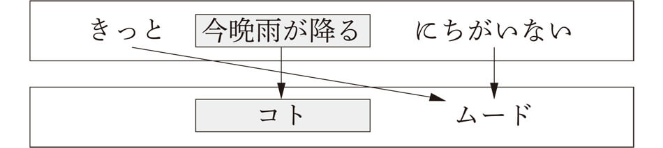では、実際の文でこのことを確認してみましょう。以下の文のなかで、コト（客観的な事柄の部分）はどの部分でしょうか。まずは考えてから、下の説明に進んでくださいね。
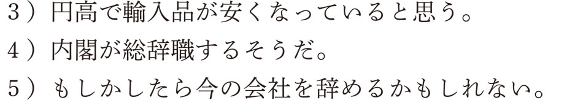３）は「円高で輸入品が安くなっている」という部分です。したがって、「～と思う」が話者の気持ちを表すムードとなります。４）は、「内閣が総辞職する」ですね。「～そうだ」は伝聞を表すムードの表現です。５）は、「今の会社を辞める」であり、「もしかしたら……かもしれない」がムードの表現ですね。いかがでしょうか。なんとなく、コトとムードという２つの階層が理解できたでしょうか。これらのことをまとめて示すと以下のようになります。
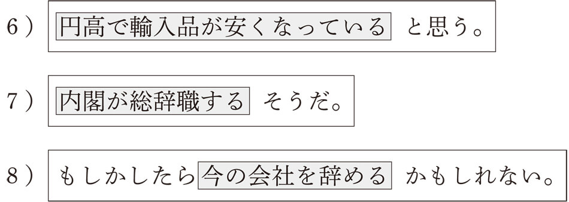このように、日本語文は客観的な事柄の部分を主観的な気持ちの表現が覆うような関係で成り立っていることがわかります。
じつは第１章で見た日本語文の基本的な構造はコトを表していたのです。つまり、格助詞は文の成分と述語とをつなげることで、客観的なコトを構成する役割を担っていたわけです。たとえば、「父親が台所でカレーライスを作った」という事柄であれば、次のような構造をしていると考えることができます。
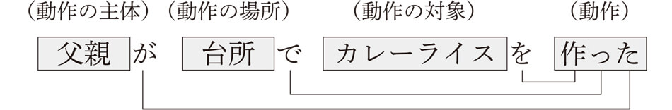このように文の客観的な部分は格助詞によってつながれますが、これだけでは文として未完成です。そう、話者の気持ちや態度を表す部分（ムード）が足りないんですね。文として成立するためには、コトの内容に対する話者の気持ちを付け加える必要があります。たとえば、上の例文であれば、次のようなムードの表現を付け加えることで、文として成立することになります。
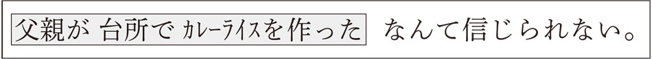「父親が台所でカレーライスを作った」という事柄に対して、「なんて信じられない」という話者の気持ちを表しているんですね。
さて、いよいよ「～は」の出番です。コトを表す格助詞に対し、「～は」はムードを表します。どのように表すかは、以下でじっくり説明しますね。
まず、上で見たコトに対し、「～は」は次のような話者の気持ちを代弁します。
どこに話者の気持ちが表されているんだろうと思うかもしれませんね。たしかに「～は」は使われていますが、話者の気持ちがどのように表現されているのか、わかりにくいですね。じつは、「父親は」は文の主題として提示されているんです。主題というのは、その文のなかで話者が特に話題の中心として聞き手に伝えたいものです。例文９）の文は、「父親について言えば、台所でカレーライスを作った」という意味合いです。この文では「父親が 台所で カレーライスを 作った」というコトの成分のなかから、「父親が」という成分が文の主題として選ばれ、「～は」で提示されていると考えることができるんですね。ということは、もちろん、その他の成分を主題として提示することも可能ですよ。次の主題文は、「父親が」以外の成分が主題として提示されたものです。
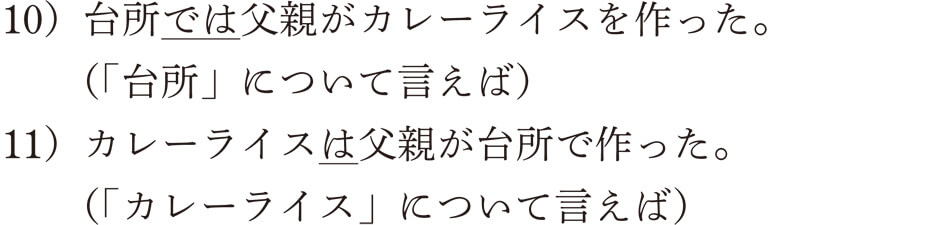例文９）から例文11）はすべて「父親が 台所で カレーライスを 作った」というコトの成分のなかから、異なる主題が選ばれているわけです。これらのメカニズムをわかりやすく図式化してみましょう。
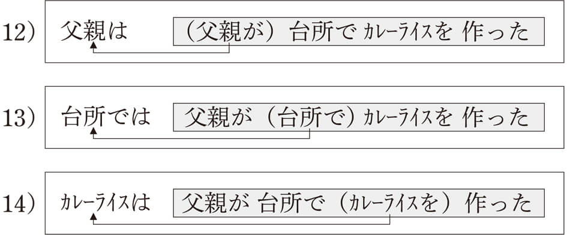いかがでしょうか。これらの主題文はすべて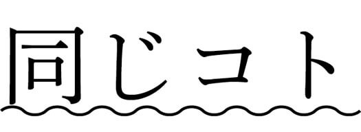からできあがっていることがわかりますね。ということは、この９）～11）の例文が表す言語事実はすべて同じであり、異なっているのはどれを主題として提示しているかだけなんです。このような主題化は私たちが日本語を使うときに無意識におこなっているもので、提示された主題について説明するというのが日本語文の基本的な姿になるんですね。
ただ、どの主題も均等に出現するわけではなく、意味的に重要度の高い成分から主題として提示されることが多いと言えるでしょう。格助詞で言えば、主語であるガ格が一番多く、その次に、ヲ格やデ格などの格助詞がつづきます。直前の例文の９）から11）のなかで一番言いやすいのはたぶん９）だと思いますが、それは、主語であるガ格が主題として提示されているからなんです。
このように、日本語文は基本的にコトの成分のなかから１つが主題として提示され、残された部分は主題を説明する部分（文法用語では解説と呼んでいます）となるわけです。
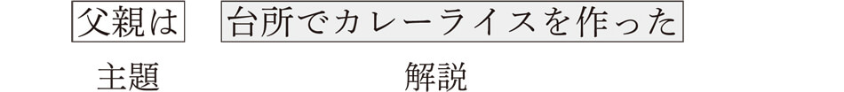文の主題は「父親は」で、その解説が「台所でカレーライスを作った」ということになるわけです。日本語文の多くはこのような「主題－解説」という構造であり、学校文法で教えられる「主語－述語」の関係ではありません。主述関係はあくまでコトのなかでの関係の一つであり、日本語文を正しく説明できないというのは、こういう理由からなんですね。学校文法でいう主語というのは、主題化された文で言えば、例文９）の「父親」だけであり、例文10）の「台所」も、例文11）の「カレーライス」もいずれも主語ではないからです。したがって、日本語文は「主語－述語」の関係ではなく、「主題－解説」という関係が基本となっていると言えるわけです。
日本語文の基本的な関係は「主題－解説」であることが理解できたでしょうか。では、問題をやりながら、主題化に対する理解を深めていきましょう。次に見る日本語文の主題はどのようなコトの成分から選ばれ、提示されたものでしょうか。（例）にならい、主題化される前の格助詞の種類（ガ格、ヲ格、ニ格、デ格、ト格）で答えてください。なお、主題のなかには、例文10）の「台所では」のように、格助詞と一緒に主題化されるものもあります。
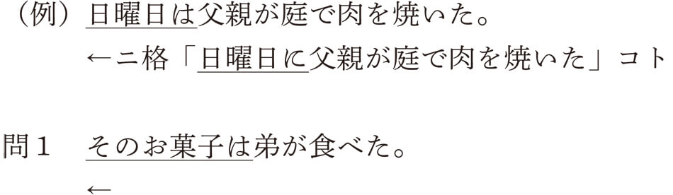「弟が そのお菓子を 食べた」というコトのなかから「そのお菓子を」という成分（目的語）が主題化されたと考えることができます。したがって、答えはヲ格です。
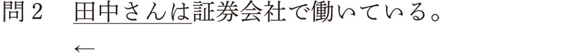「田中さんが 証券会社で 働いている」というコトのなかから「田中さんが」という主語が主題化されています。したがって、答えはガ格です。
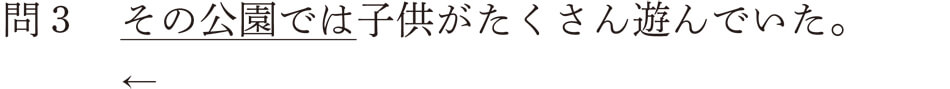この問題は簡単ですね。「～は」と一緒に「～で」が現れているからです。「子供が その公園で たくさん 遊んでいた」というコトのなかから「その公園で」が主題として提示されています。したがって、答えはデ格となります。
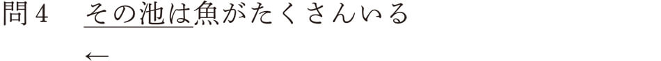「その池に 魚が たくさん いる」というコトを考えることができます。したがって、「その池に」が主題となっていることから、答えはニ格です。
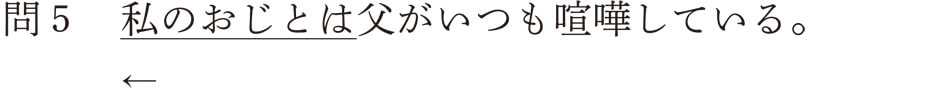これもト格が「～は」と一緒に提示されていますね。「父が 私のおじと いつも 喧嘩している」というコトから、「私のおじと」が主題化されていることになります。したがって、ト格が正解となります。
いかがでしたでしょうか。すべて正解できたでしょうか。この練習問題では、９つある格助詞のなかからヲ格、ガ格、デ格、ニ格、ト格が主題化される例文を見ましたが、その他の格助詞であるヘ格、ヨリ格、カラ格、マデ格も主題化することができます。以下に、その例文を挙げておきますね。
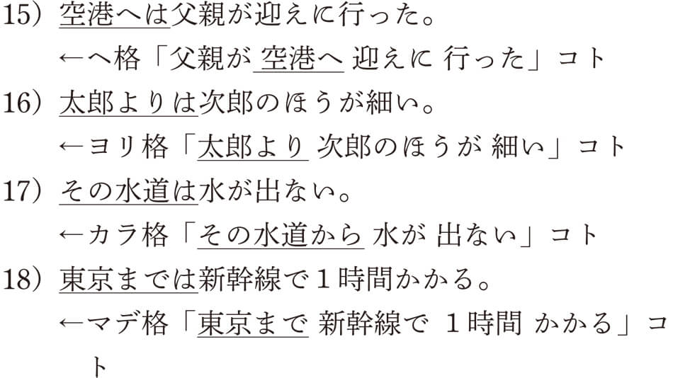以上の練習から、日本語の主題は、コトの成分のなかから話者によって選ばれたものであることが理解できたでしょうか。学校文法で教える主語と述語の関係はコトのなかにおける結びつきの一つであり、主題化された日本語文を正しく説明できないんですね。また、日本語文法で主語を特別な存在とはみなさない理由は、主語でなくても、格成分（格助詞のついた成分）であれば、どの成分でも平等に主題として提示することができるからです。主語を特別扱いしないというのは、こういうことなんですね。
このように、日本語文の典型的な構造は「主題－解説」であり、コトのなかの「主語－述語」という関係ではこうした主題文を正しく分析することは不可能なんです。小学校や中学校の教科書では、ガ格が主題化されたものだけを主語として教えますので、あまり矛盾点には気がつきませんが、たとえば「そのゲーム機は父親が買ってくれた」のような文で主語は何なのかを尋ねる問題があったとすると、お手上げになってしまいます。答えは、皆さんもおわかりのように、「そのゲーム機」が主題、「父親」が主語というものですね。実際は、こういう問題は出されませんが、いずれにせよ、ガ格ではない主題文を説明することは、主述関係ではできないんです。
第１章から第２章で見てきた「主題－解説」という考え方は、三上章さん（1903～1971）という文法学者の理論に負うところが大きいと言えます。三上章さんは高校の数学の教師から転じて、独学で文法を研究し、独創的な見解を示しましたが、その舌鋒鋭い議論の仕方が災いしてか、当時の国語学会からは完全に無視され、異端児として扱われました。しかし、日本語の文法研究の発展に伴い、三上さんの理論を受け継ぐ研究者が増え、現在では三上さんの功績は高く評価されるようになりました。
三上さんの理論を有名にした著作に『象は鼻が長い』があります。この本は1960年に発刊されて以来、現在まで販売されつづける超ロングセラーの作品です。この書のなかで三上さんは日本語文には「主語」はないとして、「主語廃止論」を主張しています。三上さんは、英語などの欧米語に見られる「主語」は日本語には存在しないとして、「主語」という言葉を日本語から完全に抹殺すべきであると強く訴えたわけです。残念ながら、この三上さんの過激な訴えは功を奏さず、現在でも「主語」という言葉は使われつづけています。
では、「主語廃止論」は世の中から否定されたのかというと、決してそんなことはなく、反対に三上さんの考えは大多数の日本語研究者に支持されているんです。では、なぜ「主語」はなくならなかったのかと思いませんか。そうなんですね、たしかに三上さんの主張するように、欧米語に見られる「主語－述語」という関係の上に成り立つ「主語」の存在は日本語にはありません。これは、読者の方ももうおわかりですよね。日本語にあるのは、コトを構成するガ格成分で、本書では「主語」と呼んでいますが、三上さんは「主語」でなく、「主格」と呼べと言ったんです。「主語」と呼ぶと、欧米語の「主語」を想像するため紛らわしいので、いっそのこと、「主語」という言葉をなくし、「主格」にしたほうがいいというわけなんですね。この「主格」という言葉は述語との格関係を示す言語学用語なんです。わかりやすく説明しますので、以下の図をご覧になってください。

言語学では格関係（述語と成分との関係）において、主体を表すのは主格、場所を表すのは所格、相手を表すのは共格、対象を表すのは対格などと呼んでいます。「主格」を「主語」と呼ぶと、欧米語における「主語」と同じになってしまうので、日本語では、「主語」ではなく、「主格」にしたほうがいいということなんです。
欧米語における「主語」は「主題」と「主格」が一体化している特別な存在なんですが、日本語の「主題」はこれまでに見てきたように、格成分であれば、どれでも「主題」になりえるわけです。たとえば、上の例文の格成分であれば、以下のように、どれでも主題化することが可能になります。
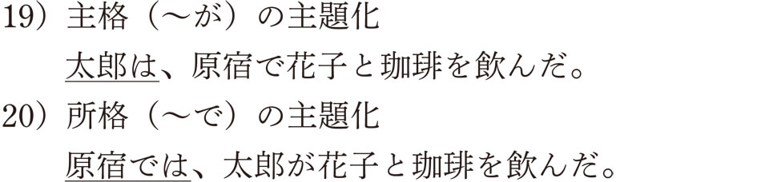 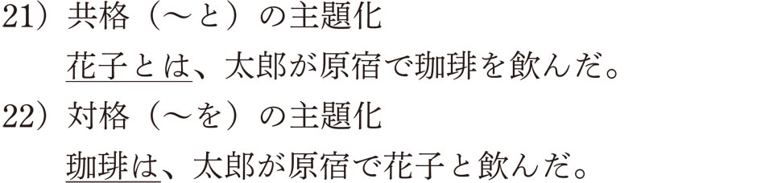欧米語型の主語と言えるのは、例文19）の「主格」が主題化されたものだけなんですね。これらのことから、日本語には「主格」と「主題」がいつも一致するような欧米語型の「主語」は存在しないということになるのです。
だったらなおさら、三上さんの主張するように、日本語から「主語」という言葉がなくなったほうがいいのですが、この「主語」という言葉、私たち日本人にとってとてもなじみの深い言葉です。学校教育では国語で教えられるだけでなく、英語の授業においても必須の言葉です。仮に国語教育で使われなくなったとしても、英語の授業では必ず必要となります。欧米語を勉強する人にとってはやはりなくてはならない言葉なんですね。したがって、三上さんの主張は日本語には当てはまるのですが、その他の外国語教育には当てはまらないため、「主語」という言葉は消えることはなかったんです。では、なぜ多くの日本語学者が「主語」を使いつづけているのかというと、三上さんの言う「主格」という意味で「主語」という言葉を使っている人が多いわけです。つまり、日本語で使われる「主語」は、欧米語での「主語」とは異なり、「主格」を指しているということなんですね。だって、主格語を短くすれば、「主語」になるじゃありませんか。もちろん国語学の関係者のなかには欧米語的な意味で「主語」を考えている人もいますが、日本語研究者の多くは「主格」という意味で「主語」という言葉を使いつづけているのです。本書でも「主格」という意味で「主語」を使っています。
三上さんの生前の写真を見ると、細身の顔に眼鏡をかけ、その奥から眼光鋭い視線が覗き、いかにも反骨精神の固まりのような印象を持ちます。自分の意見に異を唱える者には公開の場で堂々と議論を挑むなど、そのやり方は閉鎖的な日本の学界ではかなり異色の存在でした。では、独りよがりで独善的な人であったかというと決してそんなことはなく、彼の著書『象は鼻が長い』の巻末では、自分とは意見の異なる奥田靖雄さんとの議論をあえて掲載するなど、議論することで日本語文法の発展を願ったんですね。「主語」という欧米語の用語を廃止しようと強く主張した三上さんでしたが、三上さん自身のやり方は、まさに議論を戦わせるという欧米型の思考に基づいていたのがとても興味深く感じられます。
▲